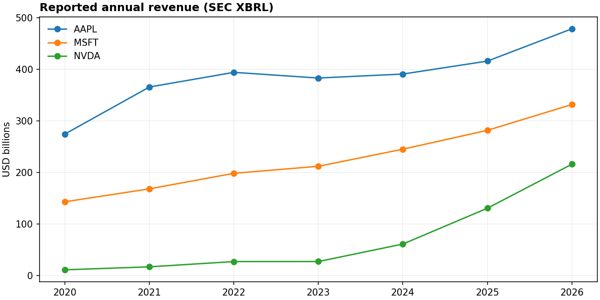
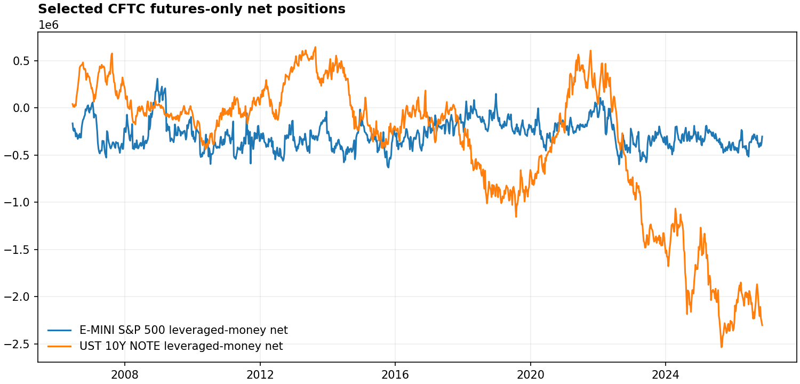
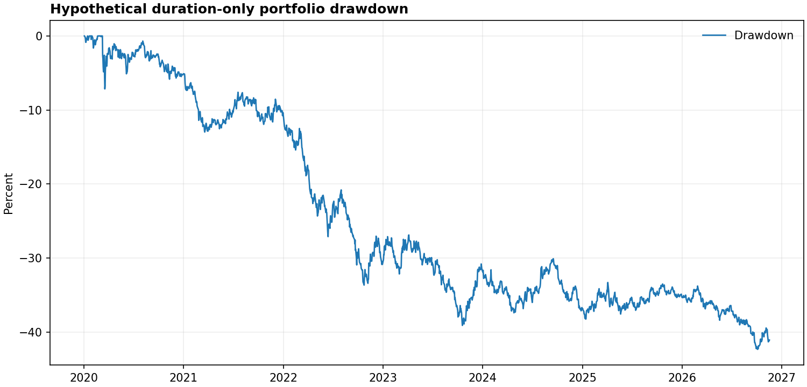
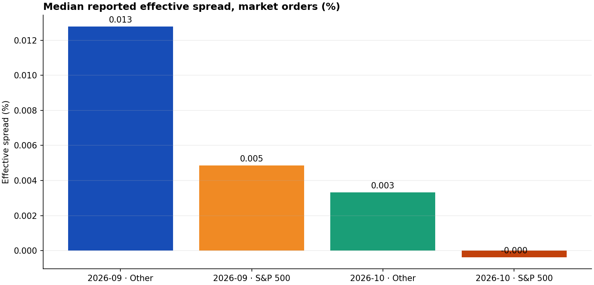
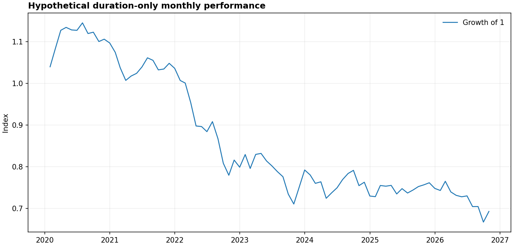
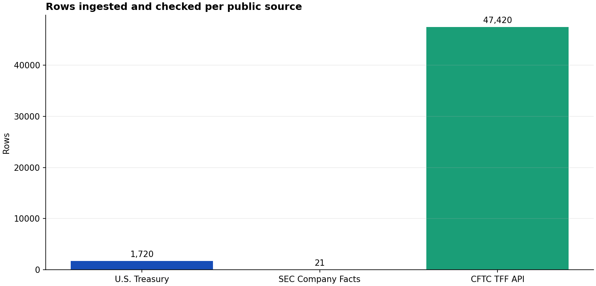
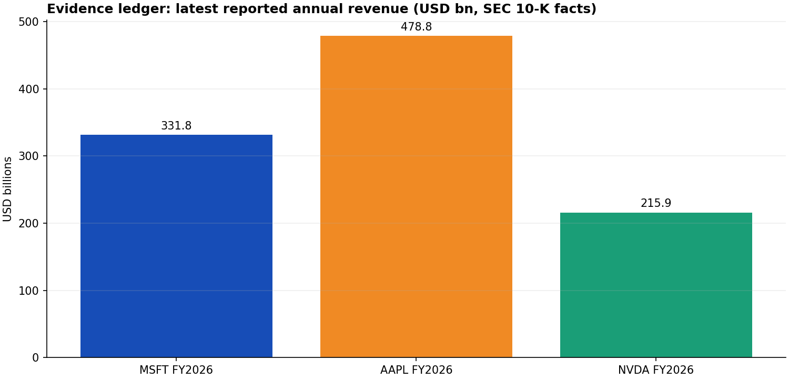

01Computed from public source data
Market & Macro Monitor
Source: U.S. Treasury daily yield curve
1,720 daily observations; the 10y–2y curve was inverted on 31.5% of observed days.
Open study, methodology and downloads ↗Twelve studies, with real public observations where available, computed outputs, sources and limitations. No case is presented as client work.
Source: U.S. Treasury daily yield curve
1,720 daily observations; the 10y–2y curve was inverted on 31.5% of observed days.
Open study, methodology and downloads ↗
Source: SEC Company Facts / EDGAR
SEC annual facts for 3 issuers, FY 2020–2026; latest revenues: AAPL $478.8bn, MSFT $331.8bn, NVDA $215.9bn.
Open study, methodology and downloads ↗
Source: U.S. Treasury daily yield curve
Out-of-sample 5-session curve-change MAE: 5.10 bp vs 5.09 bp baseline; the signal did not improve MAE.
Open study, methodology and downloads ↗
Source: U.S. Treasury daily yield curve
Training-period minimum variance selected 100% 2y proxy; out-of-sample proxy volatility 1.77% vs 7.06% equal-weight.
Open study, methodology and downloads ↗
Source: CFTC Traders in Financial Futures
CFTC TFF futures-only records across 6 selected Treasury and S&P futures contracts; latest report 2026-11-10.
Open study, methodology and downloads ↗
Source: U.S. Treasury daily yield curve
Illustrative duration proxy: historical one-day 95% VaR 0.99%; hypothetical +100bp parallel shock -11.0%.
Open study, methodology and downloads ↗
Source: Cboe BZX Rule 605 monthly OES reports
Grouped Cboe BZX Rule 605 reports for 202609, 202610: 36 market-order buckets analysed.
Open study, methodology and downloads ↗
Source: U.S. Treasury daily yield curve
Hypothetical duration-only portfolio: 82 full months; proxy cumulative change -30.7% through 2026-10-31. Not fund performance.
Open study, methodology and downloads ↗
Source: U.S. Treasury daily yield curve
Out-of-sample MAE 5.10 bp vs baseline 5.09 bp; direction hit rate 50.1%.
Open study, methodology and downloads ↗
Source: U.S. Treasury daily 3-month par yield
Hypothetical European call value 5.51 at observed 3-month Treasury rate 4.33%; other contract inputs are assumed.
Open study, methodology and downloads ↗
Source: Treasury, SEC and CFTC public feeds
Lineage and coverage checks across 3 sources; duplicate primary keys: 0.
Open study, methodology and downloads ↗
Source: SEC Company Facts / EDGAR
Evidence ledger contains 3 issuer records; deterministic extraction only, with no external LLM call.
Open study, methodology and downloads ↗Source rights and attribution: SEC website information may be copied with citation; its data APIs require fair-access controls. CFTC government information is public domain. Treasury public feed and Cboe monthly report links are cited; raw inputs remain local and are not included in this repository. Cboe warns that Rule 605 data are unaudited and may not be directly comparable.
SEC redistribution note · SEC API rules · CFTC open data · Treasury rates · Cboe Rule 605
All calculations are reproducible from the scripts and published endpoints, subject to source updates. Built from public data retrieved 18 November 2026.